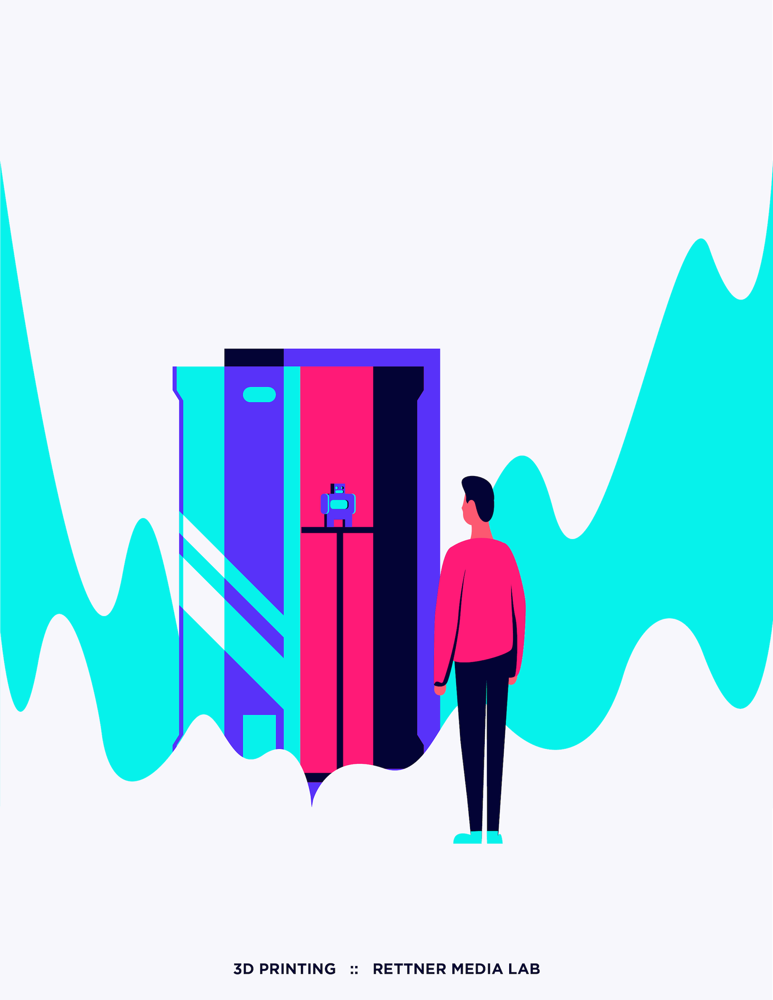
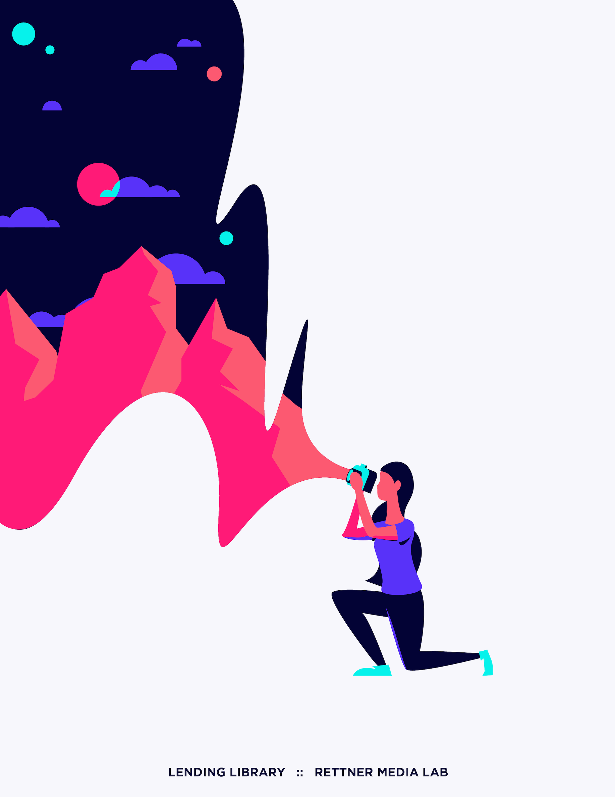

Rationale
Most of my University's branding is super toned down and boring, so I picked out a six color pallete that was bright and exciting. 3D, VR, and Equipment are Rettner's biggest services, so I drew people using them. It's important to me to be inclusive so I depicted the individuals as female, male, and androgynous. I set the type at the bottom in Gotham because it felt a little techy. But not too techy. Never go too techy.
That's about it. Really I just wanted to flex my illustration skills on a small project.
